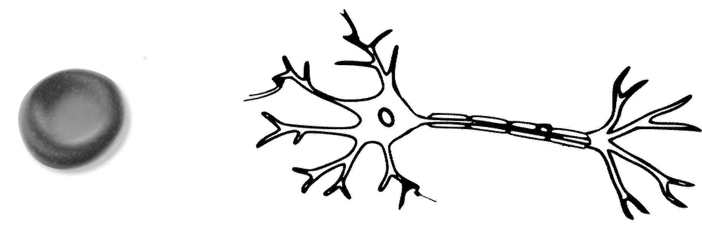

문제 2
(가) 소화에 관여하는 기관의 세포에서 소화 관련 호르몬 X의 분비량을 측정한 결과는 <그림 1>과 같았다. 정상 세포의 분비량을 기준으로 세포 A~C는 호르몬 X의 분비량이 다르게 나타났다. 단, 호르몬 X는 단백질이며, X의 분비량 차이는 일시적인 차이는 아니다.

(나) 생명 공학 기술이란 물질대사, 생장, 생식, 유전 등의 지식을 이용해 인간에게 필요한 물질을 생산하고 가공하거나 질병 치료에 활용하는 기술을 말한다. 생명 공학 기술을 활용한 산물은 우리 생활에서 다양하게 쓰이고 있다.
(다) 세포는 기능에 따라 모양과 크기가 다양하지만 그 기본 구조는 같다. 세포는 세포막으로 둘러싸여 있으며, 세포막 안쪽에는 유전 물질과 유전 물질의 정보에 따라 단백질을 합성하는 리보솜이 있다. <그림 2>와 같이 적혈구와 신경 세포는 세포의 기능에 따라 모양과 크기가 서로 다르다.

2-1
제시문 (가)의 세포 A~C에서 호르몬 X의 분비량이 정상 세포와 다르게 나타난 원인을 이론 측면에서 추론하시오. (단, B와 C에서의 원인을 같게 추론할 수 있다.) (8점)
2-2
제시문 (가)의 세포 B와 C에서 호르몬 X의 분비량 부족으로 인해 어떤 질병이 초래되어 생명 공학 기술로 이 질병을 치료한다고 할 때, 어떤 기술을 적용할 수 있을지 제시문 (나)를 참고하여 그 방법을 구체적으로 설명하시오. (8점)
2-3
제시문 (다)를 참고하여 세포의 모양을 유지해주는 세포의 구성 성분들에 대해 설명하시오. (4점)